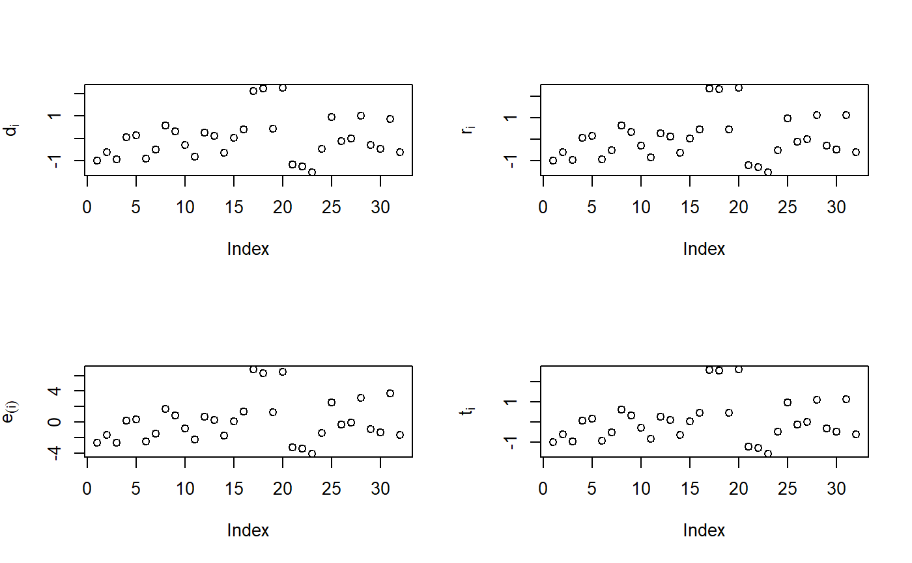

lm objects.Res.RdRes function computes Standardized Residuals,
Studentized Residuals, Press Residuals or Deleted Residuals
and Externally studentized residuals.
Res(mod)
| mod | A lm object. |
|---|
Res function returns a dataframe with residuals.
# Multiple linear regression mod <- lm(mpg ~ hp + wt, data=mtcars) # res <- Res(mod) # Residuals res$ri # To obtain Studentized Residuals (ri)#> [1] -1.01458647 -0.62332752 -0.98475880 0.05332850 0.14644776 -0.94769800 #> [7] -0.53305899 0.62035108 0.32068555 -0.30786160 -0.86081660 0.26776519 #> [13] 0.10087865 -0.65019507 0.01914207 0.44970228 2.35451716 2.33192251 #> [19] 0.44781172 2.37861784 -1.22297829 -1.30026858 -1.54564189 -0.50973308 #> [25] 0.96380569 -0.13220037 -0.01494999 1.10241512 -0.32270884 -0.48919397 #> [31] 1.11989090 -0.62369214# par(mfrow=c(2, 2)) plot(res$di, ylab=expression(d[i])) abline(h=-3, lty='dotted') abline(h=+3, lty='dotted') plot(res$ri, ylab=expression(r[i])) plot(res$pres, ylab=expression(e[(i)])) plot(res$ti, ylab=expression(t[i]))